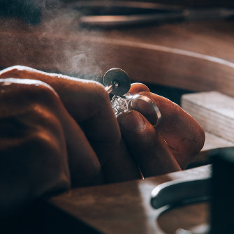

<section class="about">
  <div class="container">
    <picture>

      <!-- tablet webp  -->

      <source
        media="(min-width: 768px)"
        srcset="
          ../img/about/tablet/webp/about-tablet_@1x.webp 1x,
          ../img/about/tablet/webp/about-tablet_@2x.webp 2x
        "
        type="image/webp"
      />

      <!-- tablet-jpg -->

      <source
        media="(min-width: 768px)"
        srcset="
          ../img/about/tablet/about-tablet_@1x.jpg 1x,
          ../img/about/tablet/about-tablet_@2x.jpg 2x
        "
        type="image/jpeg"
      />

      <!-- mobil-webp -->

      <source
        srcset="
          ../img/about/mobile/webp/about_@1x.webp 1x,
          ../img/about/mobile/webp/about_@2x.webp 2x
        "
        type="image/webp"
      />

      <!-- mobile-jpg -->

      <source
        srcset="
          ../img/about/mobile/about_@1x.jpg 1x,
          ../img/about/mobile/about_@2x.jpg 2x
        "
        type="image/jpeg"
      />

      
    </picture>
    <div class="about-content">
      <h2 class="about-title">The Artistry Behind Handmade Jewelry</h2>
      <p class="about-text">
        Handmade Jewelry began as a passion project, inspired by the beauty of
        nature and the desire to create meaningful pieces. Each item is crafted
        with love, reflecting our commitment to sustainability and the unique
        story of its maker.
      </p>
      <ul class="about-list">
        <li class="about-item">Inspired by Nature</li>
        <li class="about-item">Handcrafted with Love</li>
        <li class="about-item">Every Piece Tells a Story</li>
      </ul>
    </div>
  </div>
</section>
